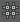

UV 编辑器具有栅格功能，该功能允许您在移动、旋转或缩放 UV 时准确控制它们的位置和间距。
| 目标 | 操作 |
|---|---|
|
显示或隐藏栅格。 |
在“UV 编辑器”(UV Editor)中，单击工具栏上的“切换栅格”(Toggle Grid)按钮，或者选择“视图 > 栅格”(View > Grid) ()。 |
|
更改栅格。 |
在“UV 编辑器”(UV Editor)中，选择“视图 > 栅格”(View > Grid) > |
|
在移动时将 UV 捕捉到栅格。 |
使用栅格捕捉（按住 X 键并移动 UV）。 |
|
在移动时更改 UV 捕捉方式。 |
双击“移动”(Move)工具以打开其选项面板。 使用“保留组件间距”(Retain Component Spacing)选项控制 UV 捕捉方式： 禁用时，所有选定的 UV 将捕捉到同一点。 启用时，选定的 UV 在移动时将保留它们之间的相对位置。 |
|
在移动时将 UV 捕捉到像素。 |
在“UV 编辑器”(UV Editor)中，单击工具栏中的“切换捕捉到像素”(Toggle Snap to Pixel)按钮，或者选择“图像 > 像素捕捉”(Image > Pixel Snap) >  ) )
在选项中，选择是否会捕捉到像素角点或像素中心。 |
|
一次性将多个 UV 捕捉到栅格。 |
选择 UV，然后在“UV 工具包”(UV Toolkit)中选择 ()，或者在菜单中选择。
|